01
Общество и городская среда · событие дня
Миллионы людей сделали выбор, который определил их судьбу: они вернулись домой, к исторической семье, обрели право говорить на родном языке и строить будущее своих детей уже в России.…

Сергей Ермаков рассказал, что планирует дожить до ста лет, потому что обещал это своей маме. Своё 84-летие экс-мэр отметил на первой инаугурации Алексея Русских. В этом году даты почти совпали.…
На торжественном мероприятии, которое состоялось в Губернаторском лицее № 101, глава города Александр Болдакин поблагодарил их за большой вклад в обучение и воспитание подрастающего поколения.…

Миллионы людей сделали выбор, который определил их судьбу: они вернулись домой, к исторической семье, обрели право говорить на родном языке и строить будущее своих детей уже в России.…

Он заставил развернуться всех четырех наставников — Гагарину, Гарифуллину…

По мнению депутата, эти меры помогут закрыть дефицит бюджета без дополнительной нагрузки на россиян.

▪️ Прекратить давать в долг на строительство другим странам. ▪️ Перенести налоговую нагрузку на иностранцев.…

Этот порог предлагают снизить до 10%, а на остальную часть должна выдаваться субсидия.
В Хельсинки уверены, что цель таких визитов — психологическое давление, попытка посеять хаос и запугать политиков перед выборами.…
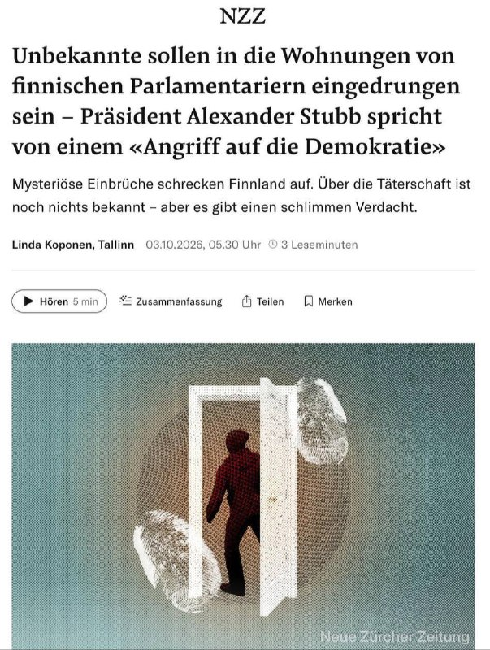
Если расходы будут выше, разницу хотят компенсировать за счёт государственных субсидий.
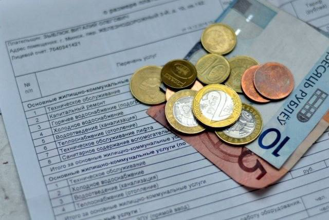
«Наделить полномочиями сенатора Российской Федерации — представителя от исполнительного органа Ульяновской области Гибатдинова Айрата Минерасиховича», — отмечается в документе.…
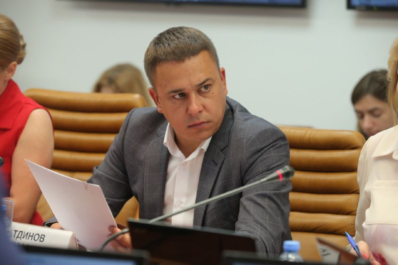

Такой доход можно получить, если в течение года на вкладе находилось более 1,2 млн рублей.
Ранее стало известно о смерти 28-летней жительницы Иркутской области от чумы.…

Звезды уже раздали свои указания: ♈️ Овнам придется искать компромиссы в бизнесе.…

Цель проекта «Эстафета Успешности» — помочь людям с инвалидностью профессионально реализоваться, стать финансово самостоятельными и интегрироваться в экономику.……


В эксплуатацию введены три пути общей протяженностью 2,5 км, предназначенные для приема, обработки грузов и их перевалки с железнодорожного на речной транспорт, сообщили в пресс-службе Куйбышевской железной дороги.…
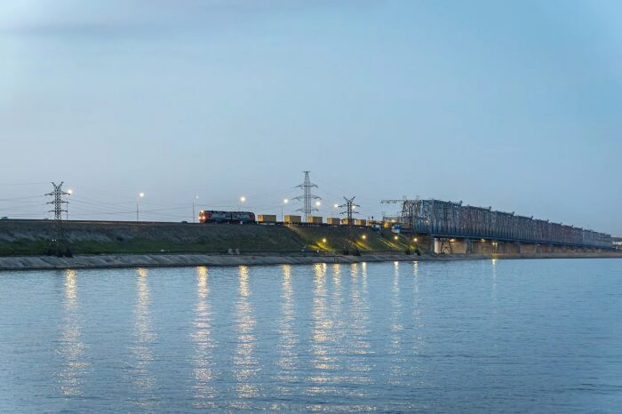

Программа автоматически направит водителю уведомление на Госуслуги, после чего у него будет ровно три месяца на внеочередную медкомиссию — иначе права аннулируют.…
Эндоваскулярный хирург Ульяновской областной клинической больницы Леонид Глущенко несколько лет участвовал в разработке биодеградируемого кава-фильтра — устройства, которое после выполнения своей защитной функции должно самостоятельно рассасываться в организме человека.…

Врачи рекомендуют вакцинироваться до сезонного подъёма заболеваемости: после прививки организму требуется от двух до четырёх недель, чтобы сформировать защиту, сообщили в региональном Минздраве.…

В ночь на 2 октября в Шелеховской районной больнице скончалась 28-летняя женщина.…

В 2026 году ветеринарная служба Ульяновской области проводит бесплатную стерилизацию и чипирование собак.…

Несколько советов по здоровому образу жизни нам дала исполняющая обязанности главного врача Центра общественного здоровья, врач-терапевт Лилия Кирилина.…

В Москве 28–29 сентября прошли XI форум и выставка «Интеллектуальные транспортные системы России».…

Кира также достойно проявила себя на Всероссийском турнире в Казани — продемонстрировала хорошую технику, характер и уверенную игру.…

Сегодня, в заключительный день турнира, участников ждет самое зрелищное испытание — городской спринт .
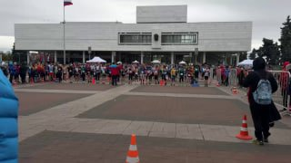
В клубе отмечают, что успех Киры стал результатом серьёзной подготовки и постоянной работы на тренировках.…
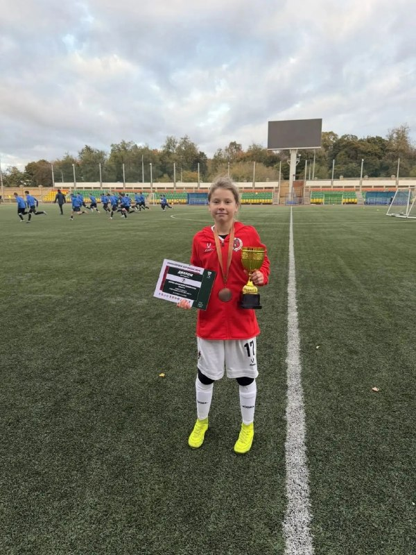
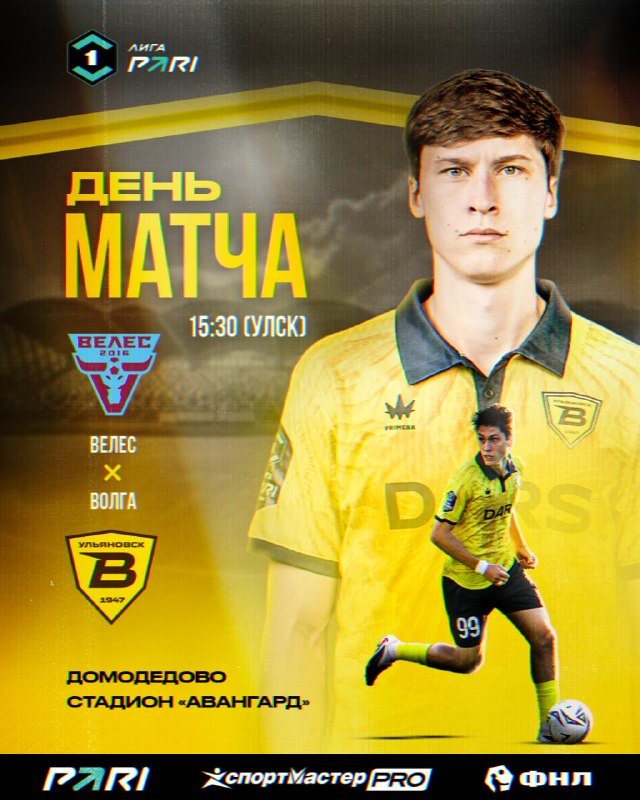

Важно знать: настоящие сотрудники военкоматов не звонят с такими просьбами. Не сообщайте коды из СМС незнакомцам, даже если они представляются официальными лицами.…


Потом разъехались — и тут потерпевшему начинают капать уведомления о долге, сообщает полиция.…
Подозреваемого задержали, он признал вину и сказал, что потратил средства на себя. Возбуждено уголовное дело о мошенничестве.

Звук сирены означает сигнал «Внимание всем!».…
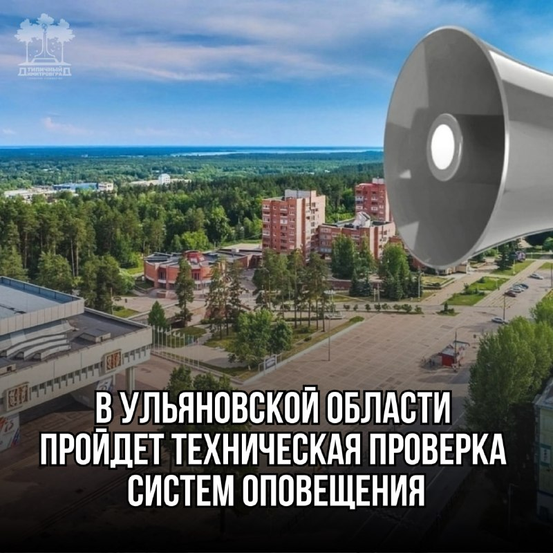
Хозяин телефона иногда давал знакомому устройство — поиграть или перевести деньги через приложение онлайн-банка.…
Для её получения не нужны приглашение или бронь отеля, а детям до 6 лет визу выдают бесплатно.
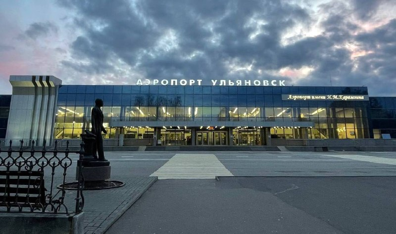
Однако кассиры гипермаркета кофейную зависимость покупателя не оценили, в положение не вошли и вызвали сотрудников вневедомственной охраны и Росгвардию.…
Установлено, что мошенники с использованием вредоносного приложения получили доступ к счетам потерпевшей, сообщает МВД по РТ.…
По словам аграриев, овощи из Азербайджана, Армении, Таджикистана и других стран стоят примерно в 2,5 раза дешевле российских, из-за чего местные компании не выдерживают конкуренцию.…
25 сентября трекер показал, что Рося находится на участке ЛЭП, а на следующий день его обнаружили погибшим.…
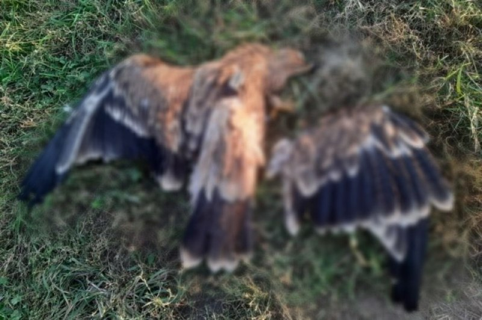
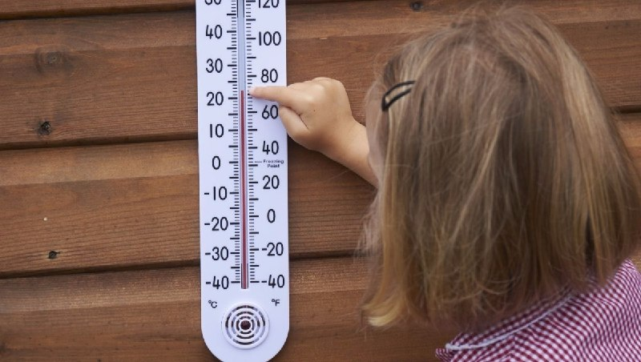
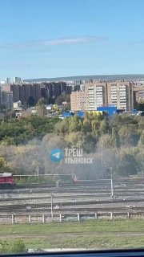
Верующие могут приложиться к ковчегу ежедневно с 7:00 до 20:00.…
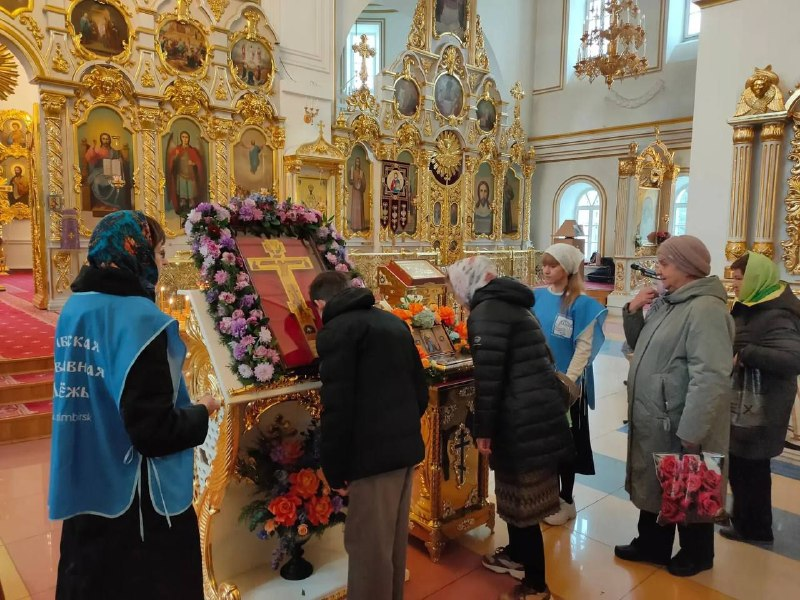
К нему обратилась сирота. Девушка рассказала, что квартиры, предоставленные ей и другим детям-сиротам, непригодны для проживания.…
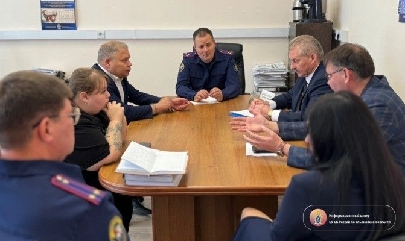
Осталось снега дождаться. Лозунг " Пусть трубы отлежатся. Засыпка в следующем сезоне" в действии.
Куда мир катится, только и дерут деньги за проезд, одного рубля не додадим уже война!
С учётом региональных климатических особенностей, обусловленных наступлением холодного периода года, в связи с началом эпидемического сезона по гриппу и ОРВИ возрастает актуальность проведения санитарно-противоэпидемических мероприятий на объектах социальной инфраструктуры, прежде всего лечебно-профилактических, образовательных организаций, учреждений социального обслуживания детей и граждан пожилого возраста, организаций коммунально-бытового назначения и оказывающих парикмахерские и косметические услуги.…

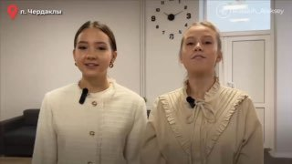
В этом году благодаря федеральной поддержке заменили изношенные инженерные сети, обновили кабинеты, оборудование для занятий, мебель.…
Русских сообщил, что проект продолжат и в следующем году.…
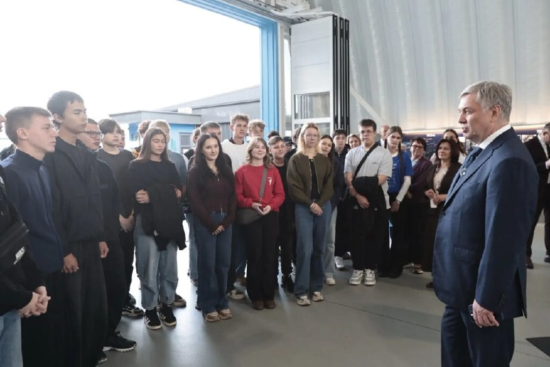
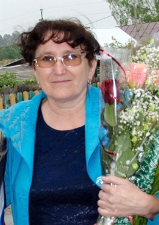
Карамзин считал, что «без хороших отцов нет хорошего воспитания, несмотря на все школы, институты и пансионы».…
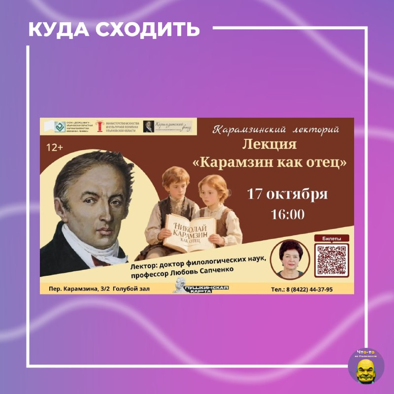
По поручению главы Ульяновска Александра Болдакина образовательные организации принимают активное участие в конкурсах разного уровня, привлекая средства на реализацию проектов патриотической направленности и развитие школьной инфраструктуры.…

Кроме того, сотрудники госпиталя, находящиеся на заслуженном отдыхе, приняли участие в городском торжестве.
30 сентября в Павловке после модернизации в рамках национального проекта «Семья» состоялась церемония открытия библиотеки нового поколения.…

Архивная комиссия разработала программу юбилейных торжеств.…

| Тема | Завтра | Ожидание | Уверенность |
|---|---|---|---|
| БПЛА и воздушные угрозы | ↓ спад | ~3.8 упоминаний | средняя |
| Губернатор / власть | ↓ спад | ~16.6 упоминаний | средняя |
| Суды и криминал | ↓ спад | ~16.1 упоминаний | средняя |
| Транспорт и дороги | ↓ спад | ~16.0 упоминаний | высокая |
| Медицина | ↓ спад | ~3.7 упоминаний | средняя |
| Спорт | ↓ спад | ~6.5 упоминаний | средняя |